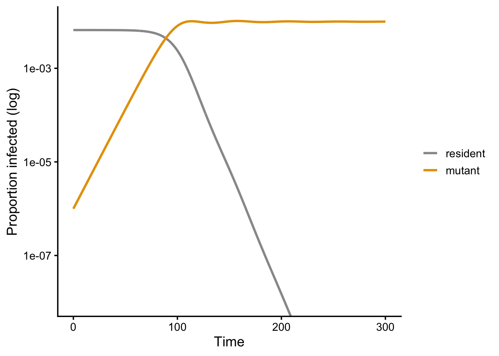
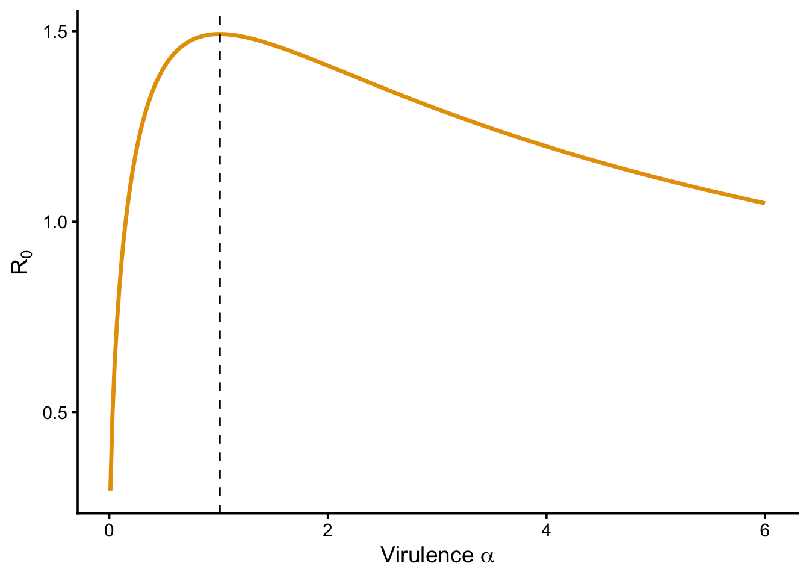
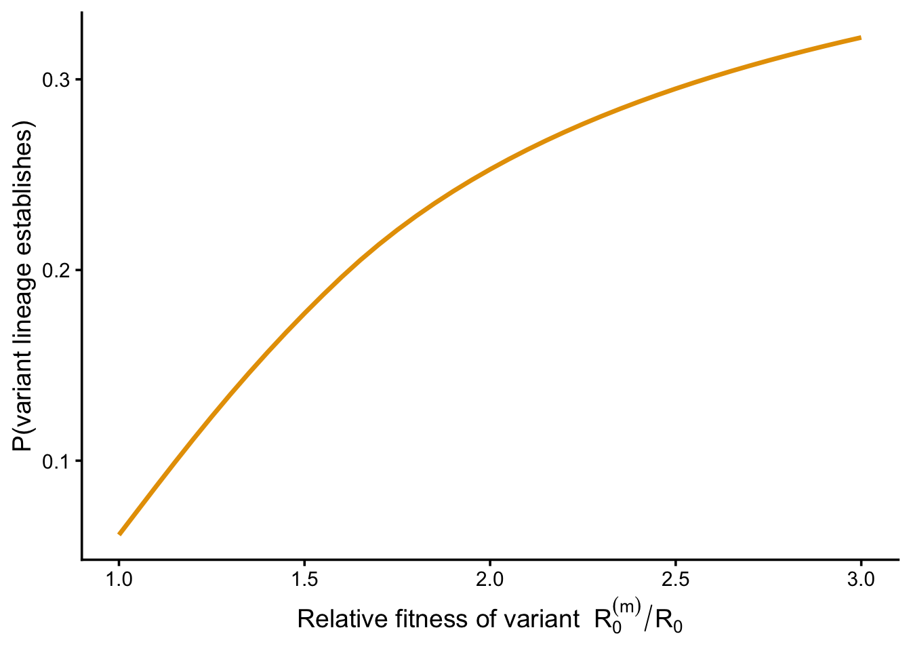

library(deSolve)
library(ggplot2)
library(tidyr)
theme_set(theme_classic(base_size = 14))T3 — Strain invasion and virulence
Day 2 · pathogen evolution between hosts
The question. A mutant strain appears in a population where a resident strain is endemic. Recovery from either strain protects against both (complete cross-immunity). When does the mutant take over?
Part A · Two strains competing for susceptibles
\[ \begin{aligned} \frac{dS}{dt} &= \mu - (\beta_1 I_1 + \beta_2 I_2) S - \mu S \\ \frac{dI_i}{dt} &= \beta_i S I_i - (\gamma_i + \mu) I_i \qquad i = 1, 2 \\ \frac{dR}{dt} &= \gamma_1 I_1 + \gamma_2 I_2 - \mu R \end{aligned} \]
Invasion analysis. While the mutant (strain 2) is rare, the resident sits at its equilibrium \(S^* = 1/R_0^{(1)}\), where \(R_0^{(i)} = \beta_i/(\gamma_i + \mu)\). The mutant then grows at rate
\[ \lambda = \beta_2 S^* - (\gamma_2 + \mu) = (\gamma_2 + \mu)\left(\frac{R_0^{(2)}}{R_0^{(1)}} - 1\right). \]
So the mutant invades if and only if it has the larger \(R_0\). It does not need to transmit faster per contact. Below, strain 2 has lower \(\beta\) but a longer infectious period.
two_strain <- function(t, x, p) {
with(as.list(c(x, p)), {
dS <- mu - (b1 * I1 + b2 * I2) * S - mu * S
dI1 <- b1 * S * I1 - (g1 + mu) * I1
dI2 <- b2 * S * I2 - (g2 + mu) * I2
dR <- g1 * I1 + g2 * I2 - mu * R
list(c(dS, dI1, dI2, dR))
})
}
p <- c(b1 = 3, g1 = 1, b2 = 2.4, g2 = 0.7, mu = 0.01)
R01 <- with(as.list(p), b1 / (g1 + mu))
R02 <- with(as.list(p), b2 / (g2 + mu))
c(R0_resident = R01, R0_mutant = R02)R0_resident R0_mutant
2.970297 3.380282 # start: resident at equilibrium, one mutant in a million
S0 <- 1 / R01
I10 <- with(as.list(p), mu * (R01 - 1) / b1)
x0 <- c(S = S0, I1 = I10, I2 = 1e-6, R = 1 - S0 - I10 - 1e-6)
out <- as.data.frame(ode(x0, seq(0, 300, 0.5), two_strain, p))long <- pivot_longer(out[, c("time", "I1", "I2")], -time, names_to = "strain", values_to = "I")
ggplot(long, aes(time, I, colour = strain)) +
geom_line(linewidth = 1.1) +
scale_y_log10() +
coord_cartesian(ylim = c(1e-8, NA)) +
scale_colour_manual(values = c(I1 = "#999999", I2 = "#E69F00"),
labels = c("resident", "mutant")) +
labs(x = "Time", y = "Proportion infected (log)", colour = NULL)
Check the invasion rate against the formula:
early <- subset(out, time > 5 & time < 40)
c(predicted = with(as.list(p), (g2 + mu) * (R02 / R01 - 1)),
observed = unname(coef(lm(log(I2) ~ time, data = early))[2]))predicted observed
0.0980000 0.0979498 Part B · Why not maximal transmission? The virulence trade-off
Suppose virulence \(\alpha\) (extra death rate of infected hosts) and transmission are linked, with \(\beta(\alpha) = b\sqrt{\alpha}\): a pathogen that replicates faster transmits better but kills its host sooner. Then
\[ R_0(\alpha) = \frac{b\sqrt{\alpha}}{\gamma + \mu + \alpha}, \qquad \frac{dR_0}{d\alpha} = 0 \;\Rightarrow\; \alpha^* = \gamma + \mu . \]
Combine this with Part A: if the strain with the largest \(R_0\) always wins, evolution should drive the pathogen to intermediate virulence \(\alpha^*\).
b <- 3; g <- 1; mu <- 0.01
alpha <- seq(0.01, 6, length.out = 300)
ggplot(data.frame(alpha, R0 = b * sqrt(alpha) / (g + mu + alpha)), aes(alpha, R0)) +
geom_line(linewidth = 1.2, colour = "#E69F00") +
geom_vline(xintercept = g + mu, linetype = "dashed") +
labs(x = expression("Virulence " * alpha), y = expression(R[0]))
Part C · A variant emerging during one epidemic
There is no endemic equilibrium now, just a single SIR epidemic in a population of \(N\). Each new infection produces a mutant with probability \(u\), and the mutant has \(R_0^{(m)} > R_0\). As in T2, a mutant lineage arising at time \(t\) establishes with probability about \(1 - 1/(R_0^{(m)} S(t))\), but only if \(R_0^{(m)} S(t) > 1\). So
\[ P(\text{variant takes off}) \approx 1 - \exp\!\left(-\int_0^\infty u N \beta S(t) I(t)\,\max\!\left[0,\, 1 - \frac{1}{R_0^{(m)} S(t)}\right] dt\right). \]
This is an approximation: it ignores that \(S\) keeps falling while the mutant lineage is still small. “Establishes” means the lineage escapes early extinction. Even a neutral variant (ratio 1) can do that if it arises early enough to ride the epidemic wave.
sir <- function(t, x, p) with(as.list(c(x, p)),
list(c(-beta * S * I, beta * S * I - gamma * I, gamma * I)))
N <- 1e6; u <- 1e-6; gamma <- 1; R0 <- 1.5
dt <- 0.05
epi <- as.data.frame(ode(c(S = 1 - 1e-5, I = 1e-5, R = 0), seq(0, 120, dt), sir,
c(beta = R0 * gamma, gamma = gamma)))
p_variant <- function(ratio) {
R0m <- ratio * R0
p_est <- pmax(0, 1 - 1 / (R0m * epi$S))
1 - exp(-sum(u * N * R0 * gamma * epi$S * epi$I * p_est * dt))
}
ratios <- seq(1, 3, by = 0.05)ggplot(data.frame(ratios, P = sapply(ratios, p_variant)), aes(ratios, P)) +
geom_line(linewidth = 1.2, colour = "#E69F00") +
labs(x = expression("Relative fitness of variant " * R[0]^{(m)} / R[0]),
y = "P(variant lineage establishes)")
Exercises
- In Part A, make strain 2 more transmissible (\(\beta_2 > \beta_1\)) but with a much shorter infectious period, so that \(R_0^{(2)} < R_0^{(1)}\). Who wins?
- In Part C, plot the integrand over time. When do successful variants arise: before or after the epidemic peak?
- Test Part C against simulations: add a mutant class to the Gillespie code from T2 (use a smaller \(N\) and a larger \(u\)).
Project hooks
- A ladder of strains on the trade-off curve; partial cross-immunity and coexistence; checking the emergence approximation by simulation. See the project menu, family C.